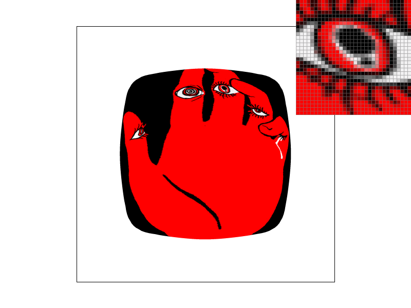

CS184/284A Spring 2025 Homework 1 Write-Up
Link to webpage: https://cal-cs184-student.github.io/hw-webpages-tripingulation-web/hw1/index.html
Link to GitHub repository: https://github.com/cal-cs184-student/sp25-hw1-tripingulation
Overview
In this homework we implemented a rasterizer that capable of multiple different sampling and anti-aliasing methods including supersampling, bilinear and nearest-pixel texture mapping, and mipmapping. It uses barycentric coordinates to interpolate colors and texture coordinates over the interior of a triangle. It can also handle hierarchical affine transforms. Overall our program can interpret svg files and display them with a variety of different viewing parameters.
Some interesting things we learned include the tradeoffs between image quality and performance (speed and memory) that are common to all rasterizers. It really put into perspective how impressive modern software, such as video games, truly are behind the scenes. We learned how to debug complex programs: in particular, we found the minutiae of mipmapping to be especially subtle and require careful attention to detail.
Task 1: Drawing Single-Color Triangles
We rasterized triangles by calculating its barycentric coordinates and then determining if the computed values for \(\alpha\), \(\beta\), and \(\gamma\) were valid (i.e., all nonnegative). If so we fill the pixel. This works regardless of the winding order of the vertices.
Our algorithm first determines the bounding box by finding the minimum and maximum of the given \(x\) and \(y\) values, and only loops over pixels within this bounding box. In fact, it usually does not need to check every pixel.
To make our triangle rasterizer faster, we avoided checking every pixel in the bounding box: instead, each row we detect when we have entered and then exited the triangle; after this we know the remaining samples in the row cannot be in the triangle so there is no need to check them.

|
|
Task 2: Antialiasing by Supersampling
Our super sampling algorithm works by sizing up sample_buffer by sample_rate,
which corresponds to an increase of sqrt(sample_rate) in each direction.
Then we populate it as if simply taking samples for a larger resolution screen.
Finally, in resolve_to_framebuffer, we downsample by by taking in the sample_rate
samples from a sqrt(sample_rate)*sqrt(sample_rate) square in the sample buffer, and then writing
their average value to the frame buffer.
We use the default data structures for sample_buffer, which is a 1D vector storing colors,
and simply scale it up as needed. Other than modifying rasterize_triangle to take supersamples,
we changed rasterize_point and rasterize_line to write
to the sample buffer multiple times so that points and lines would continue to
appear as normal. We also modified fill_pixel as well to work with the new
larger sample buffer, but it essentially does the same thing.
Supersampling is useful because it allows for images to appear smooth, detailed, and pleasing to the eye when viewing the image with a higher resolution is infeasible or impossible.
We used supersampling to alias our triangles by taking sample_rate samples per pixel, each in the center of a subpixel created from a subdivided square grid. Then, for each pixel on the screen we averaged the value of its sample_rate subpixels.
This creates a smooth look and reduces aliasing artifacts like jaggies by emulating how the image would look if it were actually a higher resolution. For example, a pixel that is half on a blue triangle and half on the white background would appear as a light blue between those two colours.
This is the exact colour that region would appear from a distance if it actually were divided into two separately-coloured regions.
Thus our brain interprets that the pixel is actually on the triangle edge.
|
|
|
|
|
In the image with sample rate 1, every pixel is either solid red or solid white. There are clear aliasing artefacts visible as the presence of jaggies and floating/disconnected pixels. The triangle is skinny enough that it dodges the center of multiple pixels, which then appear as white even though we know there is a continuous triangle there.
With sample rate 4, there are now pink pixels which are either 25%, 50%, or 75% red, depending on how many of its subpixels fall inside the triangle. This results in a smoother appearance as the pink pixels soften what was previously a hard edge between red and white pixels. However, there are still a few floating pixels at the very tip, and with only 5 distinct colours there is still a lot to be desired in terms of smoothness.
At sample rate 16, the edges appear much smoother, with many more intermediate colours between red and white implying smooth slopes for the edges of the triangle. It is still not a perfect antialiasing algorithm, as there are still islands of red attached only to sections of pink which is reminiscent of floating pixels.
Task 3: Transforms
We drew the robot in a sprinting pose, like in an Olympic pictogram. We did this by rotating their whole body, to give them a sense of momentum, then rotating their upper and lower limbs into the position for a running stride. Finally some body parts were translated where necessary to work with the new proportions. We scaled their torso to be narrower to represent it being turned to the side. They also have longer limbs as they have made some hardware modifications to be more efficient as an Olympic sprinter.|
|
Task 4: Barycentric coordinates
Barycentric coordinates are a way to describe every point on the interior of a triangle as a linear combination of its 3 vertices.
For example, in the attached image there is a triangle with red, green, and blue vertices respectively. The color at any point in its interior is a linear combination of the vertex colors. Thus each of its edges and any straight line through the interior of a triangle follows a smooth gradient. The centroid of the triangle appears as the "average" color of its vertices, which in rgb color blending turns out to be a dark gray, 33% of the way to white.

|
|
Task 5: "Pixel sampling" for texture mapping
Pixel sampling is the method through which the final color of a pixel is chosen, based on taking sample(s) from the desired texture and possibly combining them. In nearest-pixel sampling, only one sample is taken: the whole pixel is filled with the texel colour that would be nearest to the pixel's center if you overlaid the transformed texture onto the polygon.
On the other hand, in bilinear sampling, four samples are made per pixel, corresponding to the four texels nearest to its center. Then the color of the pixel is selected by linearly interpolating twice, once along each axis. Therefore its color will be "closer" to the colors of texels its center is physically closer to.
This image is an original digital artwork by Trace. Although this task didn't call for us to use an original png, while testing we found that this artwork was a particularly good example of the impact of different types of pixel sampling, so elected to use it for this section. We noticed its high-contrast, graphic style with a mix of large shapes and small details shows the difference between bilinear and nearest-pixel sampling even more strikingly than the sample images.|
|
|
|

|
|
There will be the largest difference for textures that are either highly minified or highly magnified, especially if super-sampling is not also used. In the case of minified textures, nearest-pixel sampling will lose detail and may become unrecognizable, causing whole patches of data to be covered up and not communicated to the screen. Or, in the case of textures which are highly magnified, aliasing artefacts such as visible blocks/jagged edges will be very apparent.
The antialiasing effect of supersampling diminishes the difference somewhat, especially for minified textures, but the difference will still be obvious for magnified textures.
One interesting instance would be the case of magnified pixel art textures: unlike with regular textures, the slight blurring of bilinear sampling is to the detriment of image quality, and nearest-pixel would better preserve the artwork.
Task 6: "Level Sampling" with mipmaps for texture mapping
Level sampling, aka mipmapping, is a technique used to optimize texture sampling by using precomputed, lower-resolution versions of a texture. The idea is to avoid using a high-resolution texture when the object being textured is far away from the camera, which can save processing power and reduce aliasing artifacts. When rendering a scene, we can select the appropriate mipmap level based on the texture's screen-space size, and the chosen level is sampled using the pixel sampling method.
For this task, we updated the texture sampling process to use different mipmap levels: either the mipmap level closest in size to the current texture sampling area, or sample two adjacent mipmap levels to compute a weighted average.
Supersampling costs both speed (to take the increased amount of samples) and memory (to store
the sample_rate times larger sample buffer).
Bilinear sampling costs a lot of speed and similar memory to supersampling, as multiple samples must be taken
and then multiple lerps computed per pixel. Level sampling requires both creating and storing mipmaps,
so it requires a bit more memory (to store about 4/3 as much texture data) and some pre-processing.
Therefore, nearest sampling without supersampling or mipmapping is the fastest and takes the least memory, but produces heavily aliased images.
On the other hand, using all of supersampling, bilinear sampling, and mipmapping will produce the best-looking
rendering at the cost of speed and memory.

Here are the combinations L_ZERO and P_NEAREST, L_ZERO and P_LINEAR, L_NEAREST and P_NEAREST, and L_NEAREST and P_LINEAR respectively.
|
|
|
|
|

|